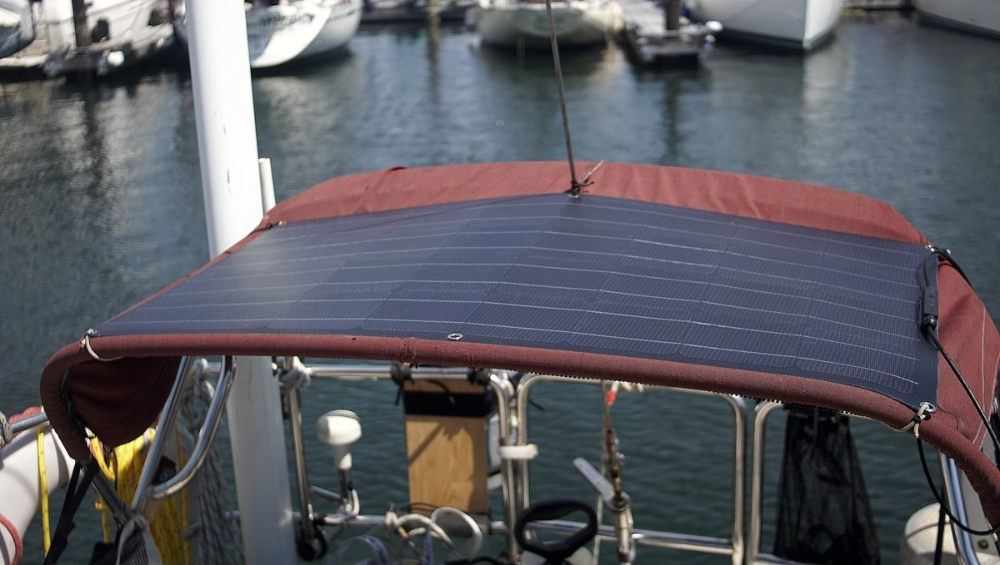

power
Halving requirements is the same as doubling capacity.Nigel Calder
There are working alternatives to most powered devices on a boat. Keeping consumptions low reduces the need for extra solar, keeping costs down and reducing the amount of things that can break, or fail.
To measure current power usage, make a list of indispensable electric systems and their energy requirements, including lighting, appliances, laptops etc. Look up their power usage in watts, for example, a Macbook Pro (models vary) might draw 60 W when in use. If in use for 6 consecutive hours, it would draw roughly 360 Wh per day. Wattage varies depending on the task performed on the computer, for instance video editing is more resource intensive than writing. The type of computer you have affects the amount of energy consumption overall, and the more external hardware you connect to it the more power it will consume. Adding up the wattage will give a rough estimate of daily use. Batteries have an amp-hour rating that can help calculate the energy available to you, to learn more about this read about batteries.
The energy coming from solar panels fluctuates based on the angle of the sun, cloud coverage and other obstructions. Power usage aboard varies a lot from day to day, depending on what task is done that day. While on passage, our own capability to capture sunlight is reduced to keep our windage low, but our energy consumption is equally reduced for not much else is drawing power than our navigation electronics like the AIS, the wind meter, and at night, the lights.
An anchored board will orbit its anchor according to the wind, and rarely stays in the same spot and so it is difficult to position panels to guarantee an optimal draw. On cloudless days the mast may cast a shadow covering a large part of the panels. On moments such as this, or cloudy days, it is best to adapt by using appliances less, and to learn to live according to the weather.
A people can be just as dangerously overpowered by the wattage of its tools as by the caloric content of its foods, but it is much harder to confess to a national overindulgence in wattage than to a sickening diet.Ivan Illich
For each 100 people telling us to "just install more solar panels", only 1 person will consider ways to reduce power usage. Instead of scaling our battery banks to our needs, we chose to adapt our needs to the available space for batteries and surface for panels. It's also important to consider that more solar panels often mean more windage. Having a complex system exposed to a harsh environment like the sea, creates opportunities for things to break. Saltwater corrosion is a very real threat. Nowadays, many electronics, or 'smart' systems, use proprietary parts, making them difficult to repair. We've encountered many boats, stuck in port for weeks and weeks, waiting for parts to arrive. An over-reliance on convenience products may bind you to services on land, in a way that you may not want.
Related: solar setup, energy & solar tips